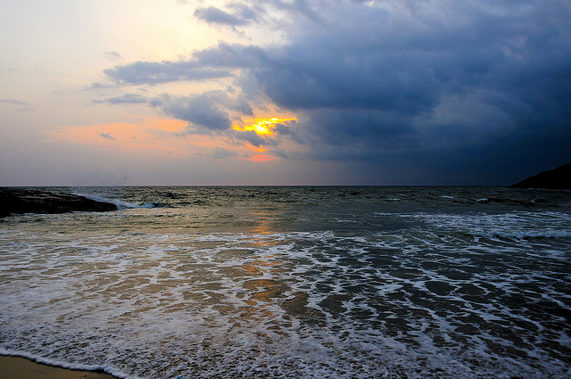

1. Kovalam Beach
location
Being the most famous beach of Kerala, Kovalam beach surely is a prime attraction for the travellers. The swaying palm, a long coastline, a lighthouse on the shore, clear waters and far away horizon is the perfect description for this place. One can indulge into activities like sunbathing, snorkelling, catamaran rides and cycling on the beach. Admiring the beautiful sunsets and the losing them to the enchanting hues of the skies is an absolute delight for all beach lovers.
2. Padmanabhaswamy Temple
location

Padmanabhaswamy Temple, which is situated inside the East Fort in the heart of Trivandrum is dedicated to Lord Vishnu. The temple is famous for having the deity in the eternal sleep posture. It is also considered to be sacred by the Hindus who come to worship the deity all year long. Also known for being one of the 108 abodes of Lord Vishnu the temple is embellished by murals and stone carvings.
3. Agasthyakoodam
location

Agasthyakoodam or also called the Agastya Mala gets its name from The Hindu sage Agastya, one of the Saptrishis of the Hindu Puranas. The hill-station is also famous for its rare herbs that are of high medical value that are found on the slopes of the hill. Diverse in its flora and fauna it also is a delight for the bird-watchers. Agasthyakoodam is the second highest in Kerala and is the origin of the river Karamana, which is fulfils the water needs of the city.